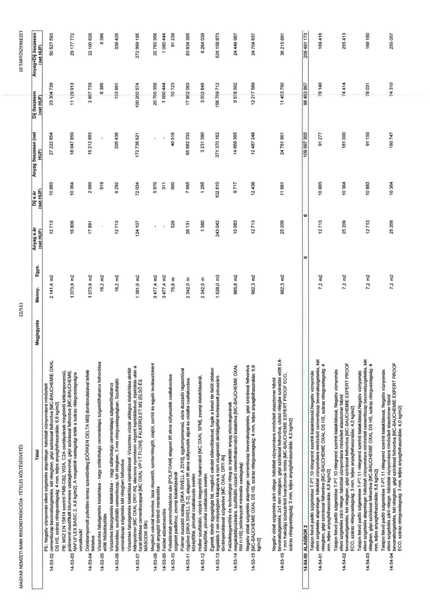

| Tétel | Megjegyzés | Menny. | Egys. | Anyag e.ár (net HUF) | Díj e.ár (net HUF) | Anyag összesen (net HUF) | Díj összesen (net HUF) | Anyag+Díj összesen (net HUF) |
|---|---|---|---|---|---|---|---|---|
| PE: Negatív víznyomás elleni szigetelés alaprétege: hátoldali víznyomásra minősített bevonatszigetelés, két rétegben, gépi szórással felhordva [MC-BAUCHEMIE OXAL DS HS, száraz rétegvastagság: 4 mm, teljes anyagfelhasználás: 6,8 kg/m2] | NaN | 2 141,4 | m2 | 12 713 | 10 883 | 27 222 854 | 23 304 739 | 50 527 593 |
| PB: MSZ EN 15814 szerint PMB-CB2, W2A, C2A osztálynak megfelelő kétkomponensű, polimerrel módosított bitumenes vastagbevonat, gépi szórással felhordva [MC-BAUCHEMIE OXAL DS HS, száraz rétegvastagság: 4 mm, teljes anyagfelhasználás: 6,8 kg/m2] | NaN | 1 073,9 | m2 | 16 806 | 10 364 | 18 047 859 | 11 129 913 | 29 177 772 |
| 14-53-02 Dombnyomott polietilén lemez szerelőréteg, [DÖRKEN DELTA MS] domborulataival lefelé fektetve | NaN | 1 073,9 | m2 | 17 891 | 2 689 | 19 212 893 | 2 887 733 | 22 100 626 |
| 14-53-03 Vízszintes falszigetelés kialakítása - nagy szilárdságú cementalapú szigetelőhabarcs felhordása cementes szigetelő két rétegben felhordva | NaN | 16,2 | m2 | 0 | 519 | 0 | 8 396 | 8 396 |
| 14-53-04 Vízszintes falszigetelés kialakítása - nagy szilárdságú cementalapú szigetelőhabarcs felhordása, szulfátálló cementiszap, két rétegben, 3 mm rétegvastagságban, Szulfátálló cementiszap szigetelés két rétegben felhordva | NaN | 16,2 | m2 | 12 713 | 8 292 | 205 438 | 133 991 | 339 428 |
| 14-53-07 Vízszintes falszigetelés kialakítása injektálással - Vízszintes vízzáró utólagos kialakítása akrilát hidropolimer [MC OXAL DRY-IN] alacsony nyomáson végrehajtott injektálással, injektálás után a furat kitöltése cementiszappal [MC OXAL VP I T FLOW], FALKERÜLET M2 (ELSŐ ÉS MÁSODIK SÍK) | NaN | 1 391,9 | m2 | 124 107 | 72 034 | 172 738 521 | 100 260 674 | 272 999 195 |
| 14-53-08 Meglévő vakolat leverése, laza részektől, szinten lévő olajtól, zsírtól és egyéb leválasztóktól mentesített felület előnedvesítése | NaN | 3 477,4 | m2 | 0 | 5 970 | 0 | 20 760 356 | 20 760 356 |
| 14-53-09 Felület előnedvesítése | NaN | 3 477,4 | m2 | 0 | 311 | 0 | 1 080 444 | 1 080 444 |
| 14-53-10 Felületen fennmaradó laza sáv [POLIFOAM] alagsori lift akna süllyeszték csatlakozása szigetelt padlóhoz, zsomp kialakításánál | NaN | 76,8 | m | 528 | 660 | 40 516 | 50 723 | 91 239 |
| 14-53-11 Polimer duzzadó szalag [SIKA SWELL A 2010], egykomponensű, vízre duzzadó ragasztóval rögzítve [SIKA SWELL S-2], Mertekadó talajvízszint alatti pufferzónához épített alsófal zsomp kialakítás esetén | NaN | 2 342,0 | m | 28 131 | 7 655 | 65 882 332 | 17 952 063 | 83 834 395 |
| 14-53-12 Holker szulfátálló, vízzáró kiegyenlítő habarcsból [MC OXAL SPM], zsomp kialakításánál, középfal, pincefalak esetén | NaN | 2 342,0 | m | 1 380 | 1 295 | 3 231 990 | 3 032 649 | 6 264 639 |
| 14-53-13 Épületen belüli negatív víznyomás elleni szigetelés kialakításánál, fugák a belső fal felőli oldalon eltávolítva, fugák a belső fal felőli oldalon legalább 2 cm mélységben kikaparva a szigetelési tömörségénél szigetelése [MC OXAL DRY-IN] | NaN | 1 528,0 | m3 | 243 042 | 102 810 | 371 370 162 | 156 789 712 | 528 159 873 |
| 14-53-14 Felületkiegyenlítés és technológiai réteg az injektáló anyag elszivárgásának megakadályozására, szulfátálló vízzáró cementhabarcsból kialakítva [MC-BAUCHEMIE OXAL DS HS, száraz rétegvastagság: 4 mm, teljes anyagfelhasználás: 6,8 kg/m2] | NaN | 985,8 | m2 | 15 083 | 9 717 | 14 868 395 | 9 578 592 | 24 446 987 |
| 14-53-15 Negatív oldali szigetelés alaprétege: cementiszap felhordva [MC-BAUCHEMIE OXAL DS HS, száraz rétegvastagság: 4 mm, teljes anyagfelhasználás: 6,8 kg/m2] | NaN | 982,3 | m2 | 12 713 | 12 438 | 12 487 248 | 12 217 589 | 24 704 837 |
| Negatív oldali szigetelés záró rétege: hátoldali víznyomásra minősített elasztomer hibrid bevonatszigetelés, gépi szórással felhordva, sűrűbb szulfátálló vízzáró cementiszap felhordása előtt 0,4-1 mm frakciójú tűziszárított kvarczhomok hintés [MC-BAUCHEMIE EXPERT PROOF ECO, száraz rétegvastagság: 3 mm, teljes anyagfelhasználás: 4,0 kg/m2] | NaN | 982,3 | m2 | 25 209 | 11 661 | 24 761 901 | 11 453 790 | 36 215 691 |
| 14-54-00 ALAGSOR 2 | NaN | NaN | NaN | 0 | 0 | 109 997 305 | 98 483 867 | 208 481 173 |
| Talajon fekvő padló szigetelése T-PT.10 rétegrend szerinti kialakítással, Negatív víznyomás elleni szigetelés alaprétege: hátoldali víznyomásra minősített bevonatszigetelés, két rétegben, gépi szórással felhordva [MC-BAUCHEMIE OXAL DS HS, száraz rétegvastagság: 4 mm, teljes anyagfelhasználás: 6,8 kg/m2] | NaN | 7,2 | m2 | 12 713 | 10 883 | 91 277 | 78 140 | 169 416 |
| Talajon fekvő padló szigetelése T-PT.10 rétegrend szerinti kialakítással, Negatív víznyomás elleni szigetelés záró rétege: hátoldali víznyomásra minősített elasztomer hibrid bevonatszigetelés, két rétegben, gépi szórással felhordva [MC-BAUCHEMIE EXPERT PROOF ECO, száraz rétegvastagság: 3 mm, teljes anyagfelhasználás: 4,0 kg/m2] | NaN | 7,2 | m2 | 25 209 | 10 364 | 181 000 | 74 414 | 255 413 |
| Talajon fekvő padló szigetelése T-PT.11 rétegrend szerinti kialakítással, Negatív víznyomás elleni szigetelés alaprétege: hátoldali víznyomásra minősített bevonatszigetelés, két rétegben, gépi szórással felhordva [MC-BAUCHEMIE OXAL DS HS, száraz rétegvastagság: 4 mm, teljes anyagfelhasználás: 6,8 kg/m2] | NaN | 7,2 | m2 | 12 713 | 10 883 | 91 150 | 78 031 | 169 180 |
| Talajon fekvő padló szigetelése T-PT.11 rétegrend szerinti kialakítással, Negatív víznyomás elleni szigetelés záró rétege: hátoldali víznyomásra minősített elasztomer hibrid bevonatszigetelés, két rétegben, gépi szórással felhordva [MC-BAUCHEMIE EXPERT PROOF ECO, száraz rétegvastagság: 3 mm, teljes anyagfelhasználás: 4,0 kg/m2] | NaN | 7,2 | m2 | 25 209 | 10 364 | 180 747 | 74 310 | 255 057 |
